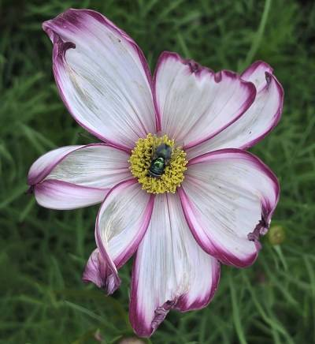
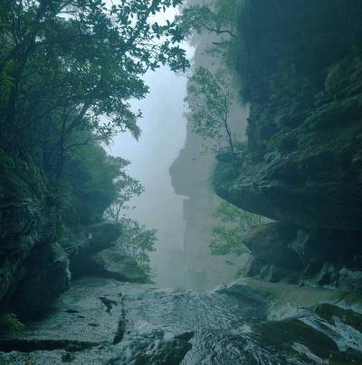
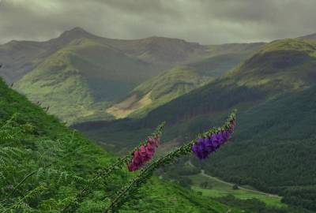
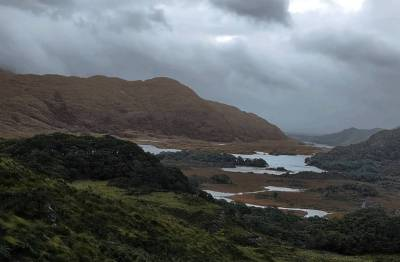

Laboration 2.0

Laboration 2.0
I den här laborationen har jag fått i uppdrag att optimera och redigera
ett antal bilder, som jag kommer att redovisa på den här sidan.
Bilderna har redigerats i Photopea
Dessa bilder har jag redigerat:



